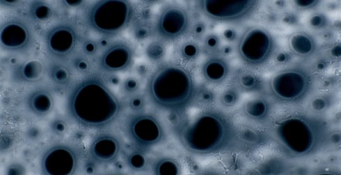

Liquid Landscape

Nan Wang
|
12 min – HD – no dialogue K+S+M+V: Wang Nan – SD: Wang Nan, Matthias Hurtl – T: Name – P: Juul van der Laan Website Nan Wang
|
Tuesday 16 oct 8.30 pm werkstattkino
The result of a two-year research study on the aesthetics of liquid patterns. By using a mixture of liquid soap and film developer, rich visual patterns were created from the transit moments when liquid hits the 16mm film strip. Microscopic worlds and macroscopic landscapes emerge. (Nan Wang)
Nan Wang born in 1986, China, lives and works in Rotterdam. She has been a media artist and experimental filmmaker since 2008. Wang researches the intersection between memories and technology. She uses both digital and analogue techniques and works in an abstract manner.
|
| Films Dust Poetry 2013 – Hometown (mit Esther Urlus) 2015 – Liquid Landscape 2018
|